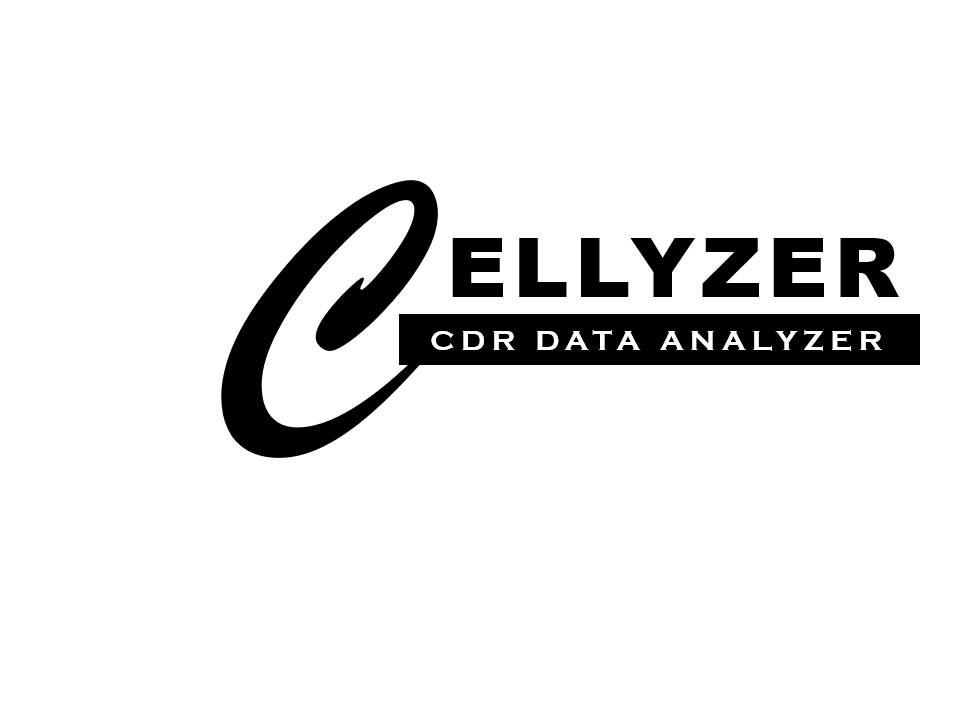
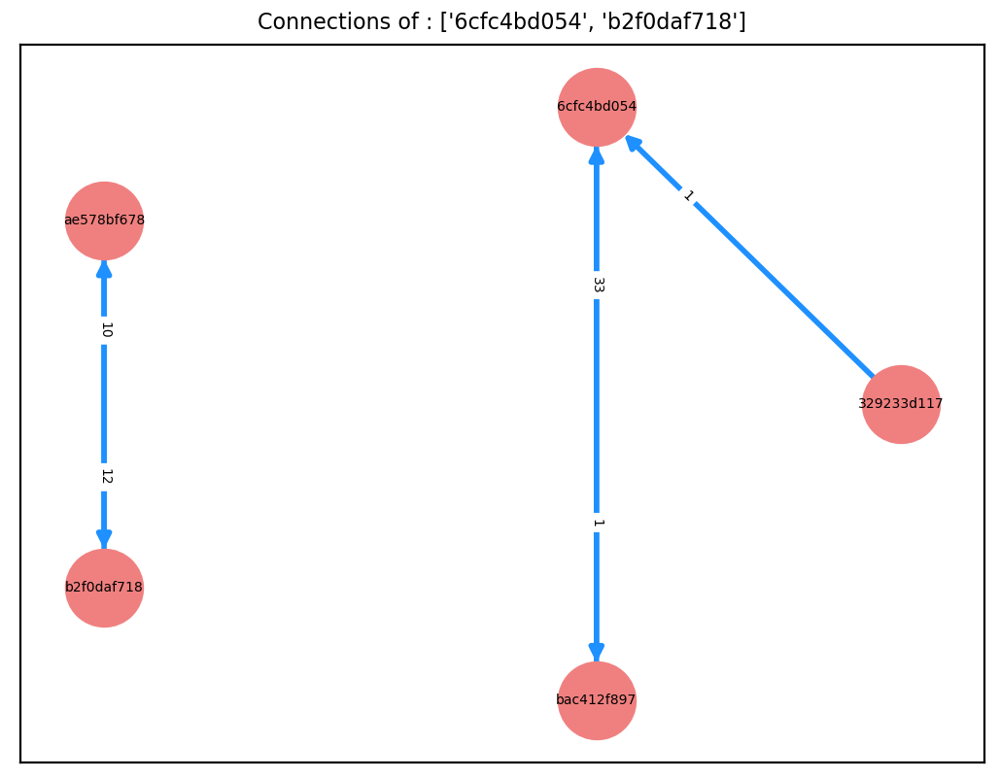
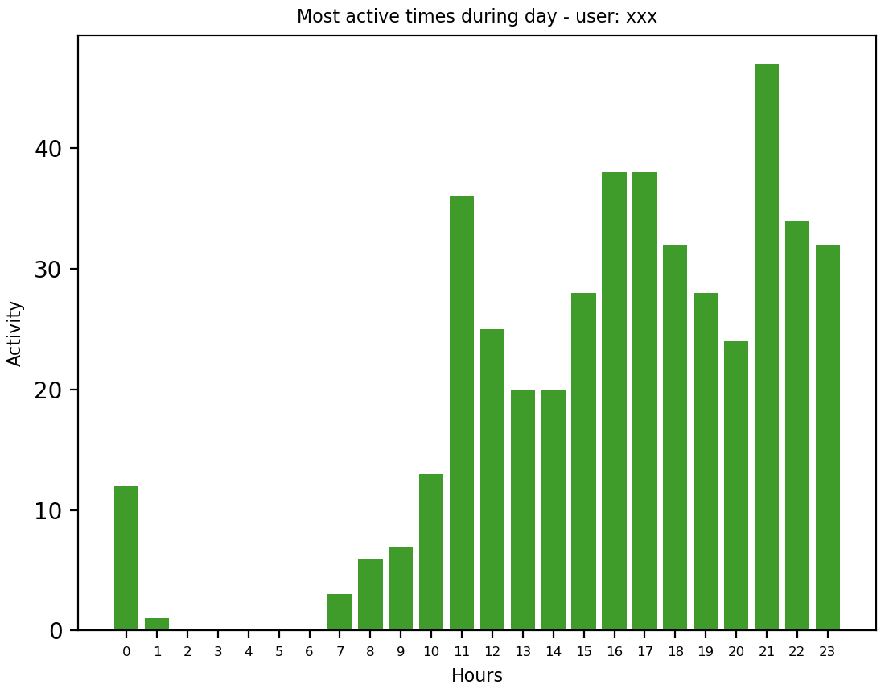
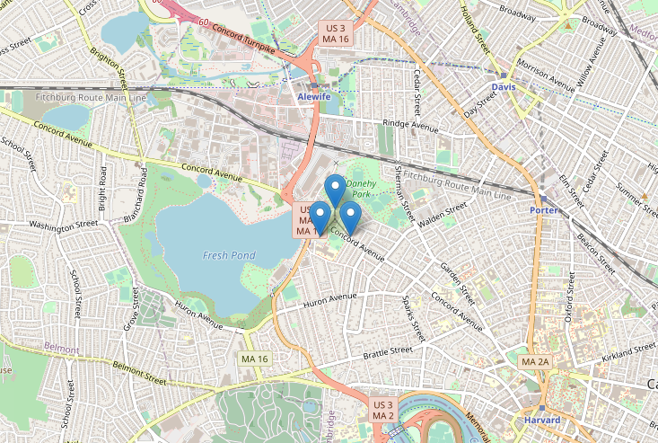
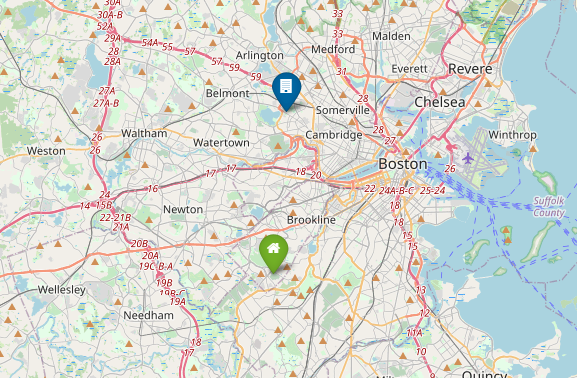
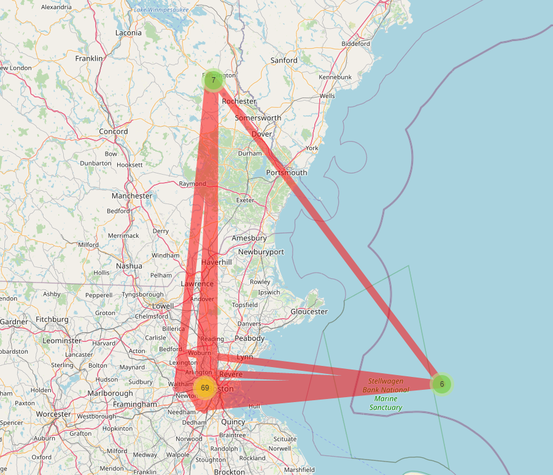

Documentation - Cellyzer1. Quick Start1.1 Installation1.2 Reading Datasets1.3 Using Functions2. Reference2.1 IOread_callread_msgread_cellto_csvto_json2.2 coreCommon Functions for Call & Message Datasets● Get all the users● Get records of a given user or records between given 2 users● Get connected users● Get connections for a given list of users● Get the connection matrix● Visualize connection network● Get most active time of a given user● Get close contactsFunctions that are specific for Call datasets● Get call records by Antenna-ID● Get ignored call detailsFunctions for antenna(cell) datasets● Get cell records● Get population● Get users around a given cell● Get trip details of a given userFunctions that are specific for a User● Get home location● Get work location2.3 utilsPrinting a list of Record objectsPrinting a Dataset object2.4 visualizationConnection Network GraphActive time - Bar chartPopulation visualization around cellsVisualize home and work locationsVisualize trips of a user
Binary installers for the latest released version are available at the Python package index : https://pypi.org/project/cellyzer/. Use the pip package manager to install cellyzer.
pip install cellyzer
After installing Cellyzer it can be used in your project by simply importing it
xxxxxxxxxximport cellyzer as czCellyzer accepts 3 kinds of datasets as below in the given format.
xxxxxxxxxxcall_file_path = "demo_datasets/test_data/calls.csv"callDataSet = cz.read_call(call_file_path)Adding a call dataset to Cellyzer is as above. read_msg, read_cell can be used to add message and cell datasets respectively. Default file type for the dataset file is csv. Also you can add xlsx and json files.
xxxxxxxxxxcallDataSet = cz.read_call(file_path="datasets/calls.xlsx", file_type="xlsx")A dataset object consists of a list of Record objects. A Record object represents a row in the dataset. Accessing the attributes of a Record object gives the values of the fields in that row of the dataset.
Cellyzer is modeled using object-oriented approach. A dataset you add is kept as an object. Hence you can use your own functions and classes with Cellyzer objects. Also you can access the inbuilt functions for the added dataset objects.
xxxxxxxxxxall_users_of_call_dataset = callDataSet.get_all_users()"""This function returns all the users available in the call dataset object"""xxxxxxxxxxsearch_user = "3e97992791"connected_users = callDataSet.get_connected_users(search_user)"""This fuction returns all the users that are connected to a given user"""Other than inbuilt functions for dataset objects, Cellyzer gives some helping functions in utils and visualization modules to print, visualize data.
xxxxxxxxxxcz.utils.print_dataset(callDataSet)"""This function can be used to print a dataset object in a table"""
IO module is to read, write, filter and clean datasets.
IO functions can be accessed directly using the name of the import of the Cellyzer library.
Example:
ximport cellyzer as czcz.read_call(file_path)xxxxxxxxxxread_call(file_path='', file_type='csv', hash=True) """ Loads call records dataset and returns a call dataset object :param file_path: file path of the dataset :param file_type: csv,xlsx,json file types are accepted :param hash: hash user phone numbers for privacy :return: CallDataset object """xxxxxxxxxxread_msg(file_path='', file_type='csv', hash=True) """ Loads message records dataset and returns a message dataset object :param file_path: file path of the dataset :param file_type: csv,xlsx,json file types are accepted :param hash: hash user phone numbers for privacy :return: MessageDataset object """xxxxxxxxxxread_cell(file_path='', call_csv_path=None, call_dataset_obj=None, file_type='csv') """ Loads cell dataset and returns a cell dataset. In order to adda a cell-dataset, a call dataset object or call dataset filepath is also needed :param file_path: file path of the dataset :param call_csv_path: file path of the call dataset :param call_dataset_obj: call dataset object :param file_type: csv,xlsx,json file types are accepted :return: CellDataset object """xxxxxxxxxxto_csv(dataset_object, filename) """ Write a dataset object to a csv file :param dataset_object: dataset object created :param filename: name of the dataset file :return: None """xxxxxxxxxxto_json(dataset_object, filename): """ Write dataset object to a json file :param dataset_object: dataset object created :param filename: name of the dataset file :return: None """
Cellyzer core module consists of all the classes and relevant methods.
Returns a list with all the users available in the dataset
xxxxxxxxxxcallDataset.get_all_users()If a single user is given, the system outputs all the records where that user is involved. If two users were given, the system returns a list of records where there had been a call/message between those two users.
xxxxxxxxxxcallDataset.get_records(user1, user2)Outputs a list of users that are connected to a given user
xxxxxxxxxxcallDataset.get_connected_users(user)Returns a list of 2 user lists in the format [user1,user2] where user1 has made a call/message to user2.
xxxxxxxxxxcallDataset.get_connections(users_list, allow_duplicates=False)Get a matrix(2D list) with which user is connected to who and the number of calls/messages between them. The matrix is visualized in an HTML page.
xxxxxxxxxxcallDataset.print_connection_matrix()Generates a graph with the connections within a given list of users. If the graph is directed the arrow head implies the direction of the call/message. The value near the arrow gives the number of connections made to that direction.
xxxxxxxxxxcallDataset.visualize_connection_network(users_list, directed=True, font_size=5)Returns a dictionary with the hours in the day as keys and values as number of calls/messages made. Can get the idea of how the user is active with the time.
xxxxxxxxxxcallDataset.get_most_active_time(user)Get the top contacts who have the most number of messages with a given specific user.
xxxxxxxxxxcallDataset.get_close_contacts(user, top_contact=5)
Returns all the records related to a given specific cell
xxxxxxxxxxcallDataset.get_call_records_by_antenna_id(cell_id)Get records of ignored call details of a given user
xxxxxxxxxxcallDataset.get_ignored_call_details(user)
Returns all the records in the cell dataset
xxxxxxxxxxcellDataset.get_cell_records()Get population around all the cells or around a given cell ID
xxxxxxxxxxcellDataset.get_population(self, cell_id=3)Returns all the unique users around a given cell_id
xxxxxxxxxxcellDataset.get_unique_users_around_cell(call_records)Get/print/tabulate trip details of a specific user
xxxxxxxxxxcellDataset.get_trip_details(user, console_print=False, tabulate=False)
Get the home location of a given user
xxxxxxxxxxuserobj.get_home_location()Get the work location of a given user
xxxxxxxxxxuserobj.get_work_location()
As discussed in the Quick-Start, Cellyzer keeps a dataset as a Dataset object where it contains a list of Record objects. A Record object represents a row in the dataset. In order to print a list of record objects in a readable manner Cellyzer provides a function.
xxxxxxxxxxcz.utils.print_record_lists(records_list)
You can have a readable console print of the dataset using the inbuilt function print_dataset. It will print the datasets in a tabulate way. If the dataset is is larger than 50 rows it summarize it with 5 head and 5 tail rows. You can also set the optional parameters head, tail to summarize and tabulate the dataset.
xxxxxxxxxxcz.utils.print_dataset(messageDataSetObject, name="Message Dataset", head=10, tail=10)
Visualize the connections of the given list of user couples in a graph. Nodes are users and Edges are the connections. The arrow head from A to B represent a call/message from user A to B. The edge value near the arrow head represents the number of calls/messages made from A to B.
xxxxxxxxxxnetwork_graph(edge_list, directed, fig_id, font_size=6, users="All") """ :param edge_list: list of 2 user couples with 1st user made a call to the 2nd :param directed: Bool value to switch between directed and undirected graphs :param fig_id: unique ID to the figure :param users: list of users :return: None, visualizes the graph in a web page """
Generates a bar chart of the active time of a given user. X-axis represents the time(hour of the day). Y-axis number of records
xxxxxxxxxxactive_time_bar_chart(time_dict, gui=False, user='xxx') """ :param time_dict: Dictionary of hour and activities as key,value pairs :param user: Given User :return: None, visualizes the chart in a web page """
Visualize a map with population around cells
xxxxxxxxxxcell_population_visualization(cell_list, map_name="population_map", notebook=False): """ :param cell_list: cells and its respective number of calls :param map_name: name of the map to be displayed :param notebook: set to True of runs in a notebook :return: shows a map with population around cells """
Visualize a map of home and work locations
xxxxxxxxxxview_home_work_locations(home_location=None, work_location=None, map_name="home_work_location", notebook=False): """ :param home_location: home locations :param work_location: work locations :param map_name: name of the map to be displayed :param notebook: set True if run in notebook :return: shows a map with home/work locations around cells """
Visualize the trips/routes of a given user in a map. Very useful to get the behavior of the user. Decisions like w here he spent most of the time, where he wend more frequently can be get easily with this map.
xxxxxxxxxxtrip_visualization(locations, map_name="trip_map", notebook=False): """ :param locations: Locations visited by the user (sorted in timestamp) :param map_name: name of the map to be displayed :param notebook: set true if runs in notebook :return: shows a map of routes of the user """